孖仔帮与您分享双胞胎育儿经
点击蓝字
关注我们
文|圆圈妈，一个文思如尿崩的双胎妈妈
坐着热气球去旅行
继上一篇《嘿！双胞胎孩子的亲子阅读攻略，要来一份吗（0--1岁阶段）》
继续说说圆圈兄弟1—2岁时，我和他们哥俩的双胞胎亲子阅读经历。
1岁开始，圆圈可以颤巍巍地走几步了，跟随大动作发展的同时还有小动作，最常见的动作就是抢！给亲子阅读添了不少麻烦。
我才开始读几句，他们就蹒跚地扑过来，把我的书夺走。
接着两兄弟为了绘本就上演一场《夺书奇兵》的好莱坞大戏，结局很悲壮，纷纷挂彩，连同绘本也尸骨无存。
但我依然很高兴，因为他们对我读书这个情景开始有反应了，我再也不是透明的一尊佛像了。
虽然他们的反应不是很理想，但终究表明我这一年来的自言自语还是初见成效，至少成功吸引了他们的注意力，从而开始跟我有互动了。
半年来，牺牲了38本卡片书和3本婴儿画报，全都惨遭圆圈兄弟的辣手摧花，无一幸免。
而我也是断断续续地给他们读，唯一不变的还是坚持。
觉得他们好像抢的差不多了，撕的差不多了，我开始筹备新书被他们看。
1岁6个月，我把那些被圆圈折腾得面目全非奄奄一息的绘本收藏起来，并根据圆圈的生长发育情况换上一批新绘本。
童谣，绕口令，猜字谜和三字经，以及一些有简单故事情节的书。
刚开始，他们对新书非常感兴趣，还能自己去书架上翻书看，顺便把书架蹂躏一番。
我一点都不生气，还为此沾沾自喜。
可是好景不长，只是持续了个把星期，他们再也不看书了，
也许是新鲜感过了，也许是受电视的影响，他们更加喜欢看画面感较强的动画片。
曾经一段时间，不管我怎么努力，变着法子读，他们都不感兴趣，总是听不到几分钟，就不知所踪了。
要么就因某些奇葩小事打起来。
比如我给他们哥俩在读绘本，飞过来一只苍蝇，被我打死了，最后他们两个为了苍蝇尸体谁去扔到垃圾桶，闹得不可开交，最后索性把书丢掉，厮打成一团。
我顿时在风中凌乱了…
我发誓，我要是企图劝说一定是自讨苦吃。
于他们而言，老母亲此刻远远比不上一只死去的苍蝇重要。
为此，我挫败极了！
加上那段时间公司事情多，我更加没有激情去热脸贴冷屁股了，试过两个月都没怎么陪他们读书。
我感觉他们到了对书本的厌倦期，没有新鲜感了。
这种读着绘本莫名其妙就撕逼，最后不欢而散的情况一直持续到圆圈1岁10个月。
圆圈奶奶经常念叨圆圈兄弟不太会说话，小区里比他们小半个月的小男孩，已经会念“床前明月光”了。
而圆圈兄弟说个短句子都有点困难，可把我急坏了！
我又重新翻出堆在角落里已经发霉长毛的绘本，放在圆圈的眼前，一副大义凛然的样子，必须逼着这两只货啃完这些绘本。
虚荣心让我不得不逼自己一把，出生就比别人落后一大截，总不能背唐诗也输给别人吧！
我真的较劲儿了！
看到尘封已久的绘本，圆圈觉得很稀奇，仿佛从来没有看过似的。
重新拿起看时，他们居然可以读出一些单词，一些动物图案几乎都认识。他们还很激动，咿咿呀呀地指着那些图案，手舞足蹈。
我知道他们看懂了，可是表达能力有限，说不上来，只能像蚱蜢一样跳着表达…
此时此刻，我比他们更激动，原来一直以来我并不是一个人在自言自语，他们也并没有当我不存在。
他们在潜移默化中，渐渐习惯了我的声音，并慢慢地接受我说出的内容，最后牢牢记在心上，关键时刻还能说上几句。
谁说早期亲子阅读没有用啊，只是我们还没发现而已。
此后，我趁热打铁，重新购入一套《幼儿认知小百科》。简单图案+中英文，如图所示：
每天中英文一起读，看多少读多少，也不规定多少时间，一般10分钟左右，兴致好就20分钟，甚至更久。
可能是新书的原因，他们非常感兴趣，有时候我下班回家，刚到门口他们就拿着书本叫我给他们读。
2岁，我觉得我与圆圈兄弟的亲子阅读有了质的飞跃，我再也不用主动找他们看书了，轮到他们找我看书了。
不管是新书旧书，他们总是会从书架上自己挑好书塞在我手上嚷嚷着要读：“妈妈，讲书（读书）”
有时候在忙事情不得不拒绝他们要读书的请求，他们还会委屈到大哭。
我有种熬出头的感觉！看着他们这样哭就觉得幸福极了！
感谢自己在这两年来的坚持和无与伦比的耐心。
坐着热气球去旅行
1—2岁的双胞胎亲子阅读建议：
这个阶段的孩子心智各方面已经在不断完善中，除了前面提到的要坚持，雷打不动，从这个阶段开始要讲究引导方式和技巧了。
以下是我在双胞胎宝宝亲子阅读的引导方式和技巧上的一些总结和心得。
引导他们一起读
GOOD TIPS
刚开始是我读给他们听，一边读一边用手指着图案。读童谣或者三字经的时候，会让他们一起跟着念，一字一句地念。
这个阶段可以适当增加些趣味性的环节， 这些环节可根据两孩子的实际情况DIY，如角色扮演，结合手工游戏等创意性的引导方式。
比如，说到恐龙，那就做出恐龙的样子吓唬他们，比如猪，那就扮猪吃老虎，让他们也一起扮演。
这就是双胞胎孩子的好处，非常适合角色扮演，人多热闹，气氛融洽。
值得一提的是，读绘本时，创意性的互动不能本末倒置，应该适可而止。
若孩子更喜欢通过抓、握、摸、撕、扯这些动作来感受书，那就不必刻意去追求这些DIY的花样。
引导他们提问题
GOOD TIPS
阅读过程中，适当引导他们提问题，若他们还不会表达，就根据自己的猜测，说出问题，然后自问自答。
如： ----“这是小鸭子吗？”“它们会游泳吗？”
----“是小鸭子，游泳可厉害呢！”
在阅读过程中，我会注意观察他们看书的反应，并从中判断他们会对哪些事物感兴趣，然后投其所好地提问题。
如果我猜对了他们的问题，他们会非常高兴，且听得很仔细，会跟着我重复遍，意思是让我再问一次。
当然，我的亲子阅读并不是一帆风顺的。
我遇到的最大问题，也是几乎所有双胞胎家庭在两孩子这个阶段都会遇到的问题。
两孩子抢书，厮打成一团，相互干扰。
圆圈兄弟口欲期太漫长了，1岁多了，依然跟书本过不去，会把我的书抢过来，然后各种撕，撕不烂就用牙咬，咬不动就哭。
关键是期间还有他们哥俩还要比赛谁咬得嗨，然后还要不明原因上演一场比宫斗戏还要精彩的抢书大战。
尤其是他们 “人多力量大”，虽然只是两个人而已，但场面却非常壮观。
就好像一屋子的鸭子满客厅飞一样，糟糕极了。
一起撕，一起抢，一起咬，一起哭…
完全没法继续！
如果你也有这种情况，建议你别说话，说啥都是徒劳，你就默默地看着吧！看着就行了。
当然并不是就此罢休了，得暗中想法子。
如果只是撕书，那是宝宝的成长发育必经阶段，几乎没有哪个宝宝不撕书的。
那就找废纸给他们撕，撕个够！还能锻炼他们精细动作的发展。
其实撕书不是问题，只是普遍现象而已。父母能做的就是提供安全的选择，满足他们的好奇心即可。
我给圆圈买的婴儿画报，读得不多，倒是给他们撕个一干二净，最后半片纸屑都找不到了。
如果撕书的时候互相抢书打闹，那就给他们点教训吧。
用适当的惩罚或奖励去约束他们，如打屁股，打手心…
也可以奖励式，如能好好看书，做到不抢书，可奖励一颗糖果，可以看一会动画片,可以...
用孩子平时感兴趣的东西去诱惑他们，从而约束他们...
圆圈兄弟皮实，越打越嗨，我只能用他们最在乎的东西去约束他们。
比如没收他们最爱的托马斯玩具，而且说到做到，决不食言！
如果发现他们对书本兴趣不大，那要找找原因，是不是书目不合适还是自己的读书方式不对劲。
如果都没问题，那先缓缓吧！给孩子们来点空窗期呗！
也让自己喘口气，莫因一时的挫败中断了亲子阅读的决心，这个阶段的孩子非常不定性，唯有坚持了。
谁让咱同时摊上这两祖宗！
说到这个坚持，真的很重要，不得不再一次啰嗦下！
圆圈1—2岁的时候，我还在职场上，因为工作性质，跟国外有时差，总是晚上10点才到家。
但不管多晚多累都会在睡前给他们讲书，当时的想法很简单，趁孩子对什么都感兴趣的时候，让他们多接触各种各样的书，终究是件好事。
而且把两个抱在怀里一起讲书，左拥右抱，是一件很有FEEL的事情，会让我觉得自己是个“万人迷”哈哈！
03
除了以上建议，还有些对绘本选择的建议
我觉得圆圈对绘本的厌倦期可能跟书本有关系，有段时间好久没有买新书，经常读低幼版的书， 他们估计是看腻了。
后面重新买了套适合1—2岁孩子的书籍，他们又有兴趣了。
质量
最好是正品精装版，书本的质量影响着孩子读书的兴趣。
我曾经买过盗版书，但纸张不好，老是脱胶。
虽然他们对盗版和正版没有概念，并不影响看书，但却严重影响了我的心情，从而影响了我在阅读时与他们的互动。
内容
内容选择不能太复杂，需结合书目年龄推荐上的提示，根据孩子实际情况和爱好有针对性地选择书目内容。
比如圆圈喜欢看轨道工程交通类的书籍， 那我会给他们讲汽车类的绘本，做简短的说明和描述。
他们总能聚精会神地听着，甚至还能学以致用，在街上看到跟书上一样的车，他们马上就能指出来。
不得不感慨下阅读的重要性，真的为孩子们开阔了视野，打开另一扇窗户，让他们用不同的视觉去认识这个世界。
款式
立体书非常适合1—2岁的宝宝，趣味性十足，总能轻而易举地吸引到他们的目光。
很遗憾，圆圈没有读过立体书。因为好贵，不舍得买。
他们的第一本立体书还是我投稿到某公众号，编辑给送的，圆圈当时已经3岁了。
可能是过了那个年纪，圆圈刚开始对立体书非常好奇，后来就失去兴趣，反而更喜欢看有文字带图片的书。
我观察了立体书《傻乎乎的恐龙》，非常寓教于乐。可以通过触摸，更加全面感知到恐龙的种类和形态。
非常吸引1—2岁宝宝的眼球，可大大满足他们的好奇心和求知欲。
真后悔没有早点给他们买，都怪自己当时经济能力有限。
应一句老话：再穷也不能穷教育，再苦也不能苦了孩子。
语言
有中文版和纯英文版或者中英文版。有些家长只接受纯英文版，目的是学英语从娃娃抓起。
我刚开始也跟风了，结果是有些单词我不会念又懒得查，可害苦了三个宝宝。
可是我不甘心买中文版，之后买的书就侧重选中英文版了。
但也仅限于简单的几个单词，不必是大段的文字。
儿童书籍琳琅满目，真的无从下手。但我认为不管选什么样的书本，必须是适合他们读的书。
不管这本书得过什么大奖，有多少人推荐，若不适合孩子阅读也是一本无意义的书。
究竟适不适合，那就需要父母在日常生活中多观察自己的孩子，分析他们目前的发育程度和认知水平，以及是否有特殊喜好等，从而做出正确的选择。
04
相比2—3岁的双胞胎孩子，1—2岁宝宝的亲子阅读实在有点过家家的赶脚,但确是最考验耐心的时候。
据说很多家庭就是在这个阶段纷纷败北，缴械投降，再也不敢在亲子阅读路上东山再起了。
的确，经过0--1岁一个人厚脸皮自言自语的阶段，再到1--2岁除了自言自语还要维持亲子共读的秩序，真的是好不容易打完小怪兽还要拼尽全力去打大BOSS。
有时候，真想心一横，书一丢，该干嘛干嘛去。老娘不伺候了！
好在，我的热血啊，我的傲气啊！
每天都打鸡血似的把《男儿当自强》改编成《双胎妈妈当自强》然后咆哮一遍之后，再去面对圆圈兄弟！
我安慰自己，先定个小目标。
让他们习惯书本的存在，习惯读书这样一件事情，了解到一些简单的词汇，基本上就差不多了，那这个阶段的亲子阅读就圆满落幕了。
---------未完待续-------
后面将会继续聊聊2—3岁的双胞胎亲子阅读历程
未
完
待
续
上期推文：
嘿！双胞胎孩子的亲子阅读攻略，要来一份吗（0--1岁阶段）
下期预告：
嘿！双胞胎孩子的亲子阅读攻略，要来一份吗（2--3岁阶段）
本文系圆圈妈sgguy-com原创，来源于孖仔帮，专注双胞胎孕期育儿经验分享，著作权归孖仔帮所有。
105:同卵双胞胎的天敌--双胞胎输血综合征
201:双胞胎与唐氏筛查---美丽的邂逅
212:原来双胎妈妈可以这样数胎动，好简单啊
215:双胎子宫日记系列|（下）你看不看？双胞胎妈妈直播剖腹产全过程
302:喂养干货||如何训练双胞胎宝宝睡整夜觉
306: 真人示范！双胞胎妈妈高难度喂母乳技巧
404:双胞胎家庭生存技巧01：舍不得孩子套不住狼，新生入园开学季必备
714:那个每天晚上9点钟才到家的双胎妈妈，失业了…
219双胞胎准爸爸的生存指南：不做猪一样的队友，活着出来喜当爹
220双胞胎准妈妈，其实你的产检方式一直搞错了…
222:看过这份最简单的双胞胎宝宝用品囤货清单，其他的都是将就
我猜你肯定喜欢看上面的文章，对不对嘛？关注孖仔帮，回复文章前面的数字编号即可阅读。
长按识别二维码关注我们
关于这个号
谢谢关注！我是圆圈妈
85后，全职双胎妈妈
家有孖仔男宝两枚，圆圈&圈圈
双胞胎育儿公众号：孖仔帮
旨意分享双胞胎育儿经验帮助双胞胎家庭
有经验可循
有组织可靠
希望我的经验对您有所启发
期待与您一起共享双胞胎育儿经
孖仔帮目前有4个微信社群
孕期群，喂养群，闲置群，双胞胎爸爸专属群，
如需入交流群，请+圆圈妈的微信号sgguy-com,或扫描下方二维码
由圆圈妈邀请入群
更多孖仔帮双胞胎原创育儿文章请猛戳 "阅读原文" 或者直接上圆圈妈的个人博客。
博客链接：https://www.sgguy.com/twinsbang

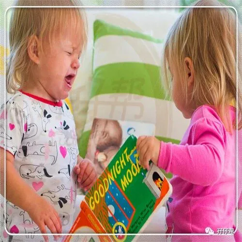
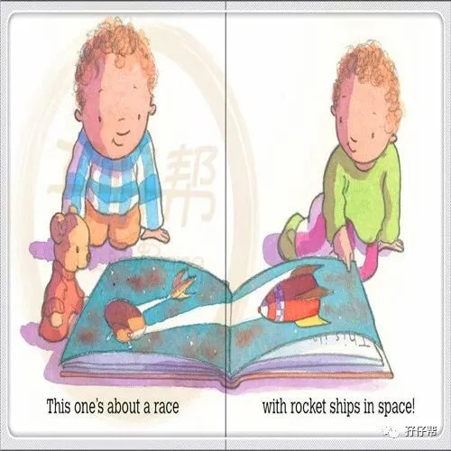
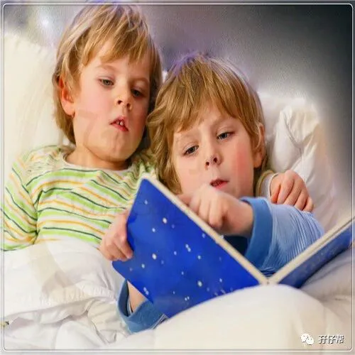
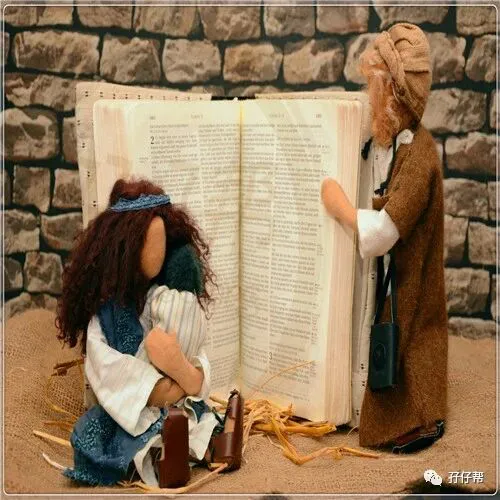
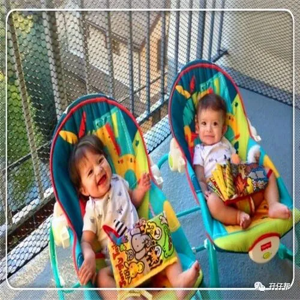
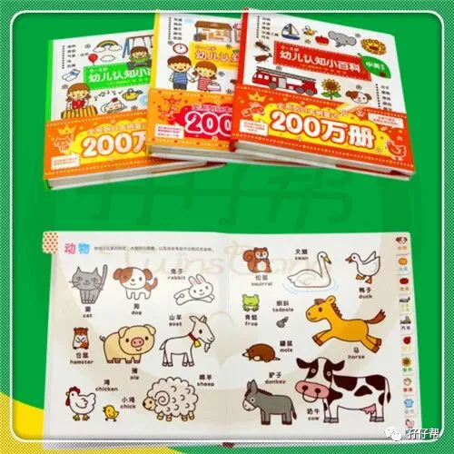
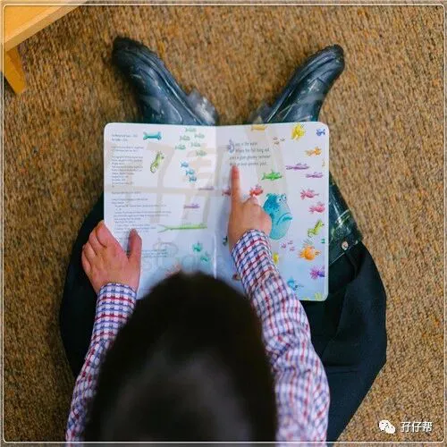

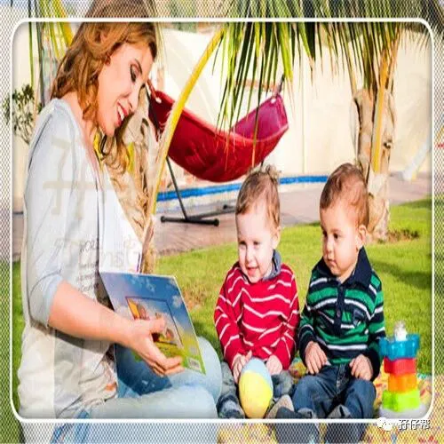
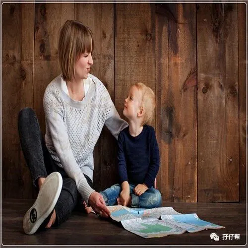
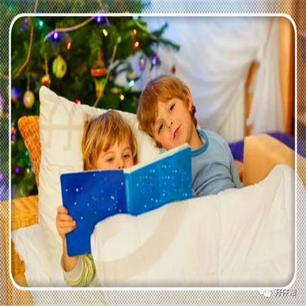
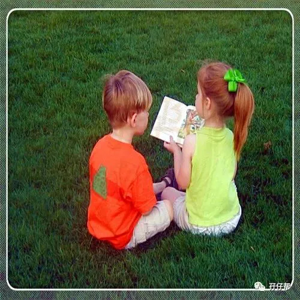
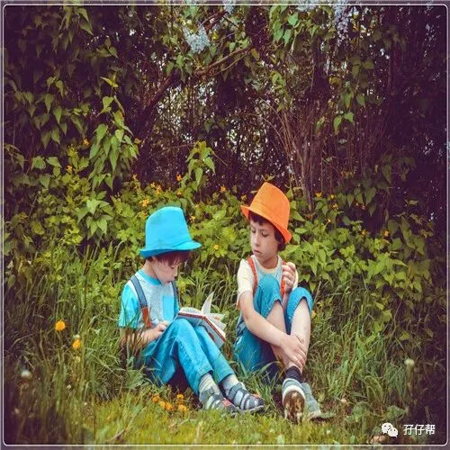
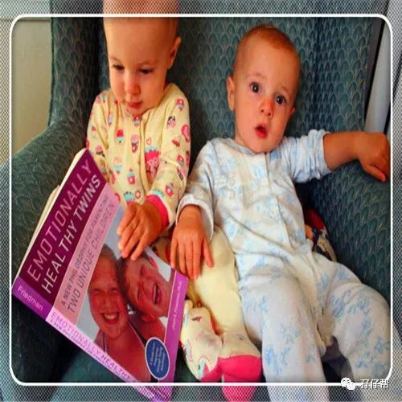
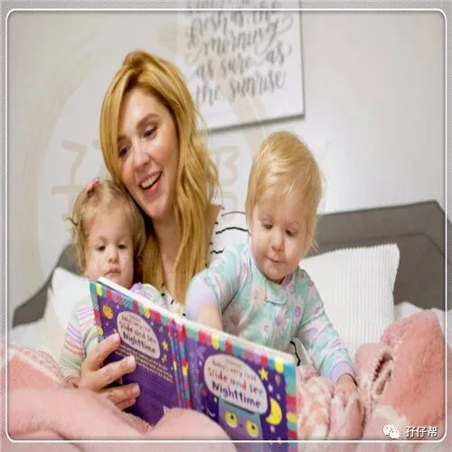
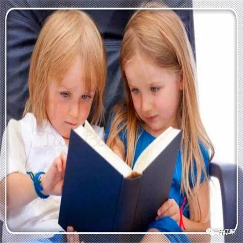
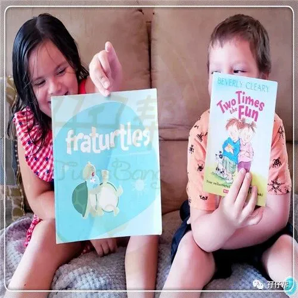
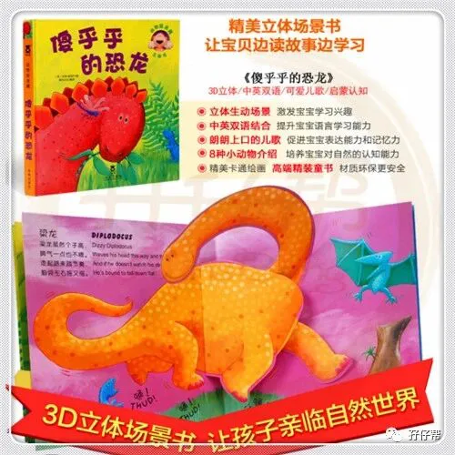
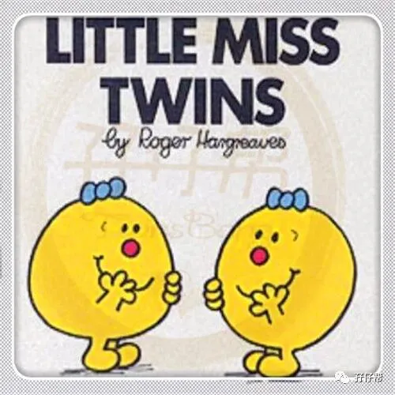
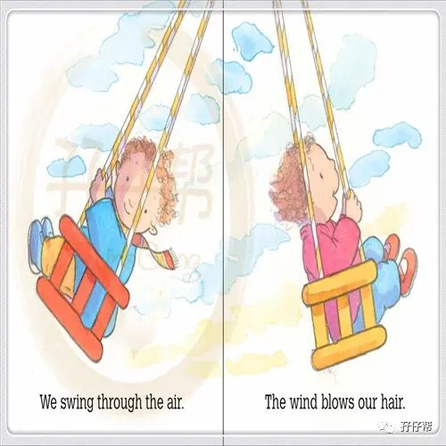